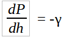
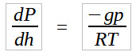
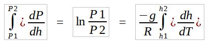
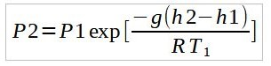
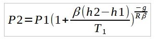

Big whorls have little whorls
Which feed on their velocity
And little whorls have lesser whorls,
And so on to viscosity.
[Concerning atmospheric turbulence.]— Lewis Fry Richardson
1.1 A general description of the standard atmosphere.
Everyday, between 70,000 – 100000 flights hope from place to place on Earth. These flights, over 46% of which are commercial flights take place at altitudes between 9.5 and 11.5 Km. Private aviation air-crafts typically fly at lower altitudes than this while some military aviation and some space research vehicles test the limits of fixed wing flights with a record height of 37.65 Km above mean sea level reached by the MIG – 25 ‘FOXBAT’. At altitudes between 20 and 50 Km, weather balloons find a safe haven to record meteorological data unhindered by clouds and the weather itself. Higher than 50 Km and up to 80 Km is the domain of sounding rockets and rocket powered air-crafts. The International Space Station orbits the earth at an altitude of about 400 km and beyond 690 km is the domain of satellites.
All these machines operate within a bubble of gas which is our atmosphere and understanding its properties proved crucial in the design and control of the spacecrafts. As in all other engineering phenomena, an international standard description of the atmosphere around the mid latitudes on an average day was developed. The International Standard Atmosphere (ISA) gives a description of how the pressure, temperature, density, and viscosity of the Earth’s atmosphere changes with altitude. The ISA mathematical model divides the atmosphere into layers with an assumed linear distribution of absolute temperature T against geo-potential altitude hi.
1.2 Symbols and Constants
The following symbols are used to define the relationships between variables in the model. Subscript n indicates conditions at the base of the nth layer (or at the top of the (n-1)th layer) or refers to the constant lapse rate in the nth layer The first layer is considered to be layer 0, hence subscript 0 indicates standard, sea level conditions, or lapse rate in the bottom layer.i
Symbols
h – Geo-potential Altitude
T – Absolute temperature
P – Pressure
β – Lapse rate
Constants
g – gravitational constant = 9.81 m/s2
R – Gas constant = 286.9 J/kg
Absolute zero = -273.15°C (0 K)
To= 15.0°C (288.15 K)
p0 = 101,325 N/m2
1.3 Temperature variation with Altitude.
To model the atmosphere, the standard assumes constant mean molecular weight of air up to 86 Km and a constant linear gradient of temperature within each of the six layers of the atmosphere. By using the perfect gas law and the hydrostatic equation, it is possible to model variations of pressure and viscosity within the layers.
Temperature gradients within the layers are represented by lapse rates (rate of change of temperature with altitude) where a positive lapse rate as in the troposphere implies a negative temperature gradient.
The following tables defines layers in the model with their respective altitudes and lapse rates.
Layer | Base Geo-potential Altitude (Km) | Lapse Rate, β (K/Km) |
0 | 0 | -6.5 |
1 | 11 | 0 |
2 | 20 | 1 |
3 | 32 | 2.8 |
4 | 47 | 0 |
5 | 51 | -2.8 |
6 | 71 | -2 |
7 | 84.85 | - |
The temperature variation for any given layer can be represented by the equation;
T = Ta + β(h – ha)
where Ta and ha are the base temperature and pressure values respectively. Thus for each layer, the temperature variation can be accurately modelled.
The following table provides the base temperature values for each layer of the atmosphere.
Layer | Base Geo-potential Altitude (Km) | Lapse Rate, β (K/Km) | Temperature (K) |
0 | 0 | -6.5 | 288.15 (15 °C) |
1 | 11 | 0 | 216.6565 (-56.5 °C) |
2 | 20 | 1 | 216.6565 (-56.5 °C) |
3 | 32 | 2.8 | 228.6544 (-44.5 °C) |
4 | 47 | 0 | 270.6499 (-2.5 °C) |
5 | 51 | -2.8 | 270.6527 (-2.4973 °C) |
6 | 71 | -2 | 214.6583 (-58.5 °C) |
7 | 84.85 | - | 188.6594 (-84.5 °C) |
1.4 Pressure Variation with Altitude.
With the temperature variation clearly defined and assuming a mean molecular weight of the air mass, the perfect gas law and the hydrostatic equation can be used to model pressure variation with altitude.
The equation of state for a perfect gas is,
P = ρRT(1.0)
It is also known that for liquids and gases at rest the pressure gradient in the vertical direction at any point in a fluid depends only on the specific weight of the fluid at that point. This can be mathematically represented as,

Where γ in this case is the specific weight.
This is the fundamental equation for fluids at rest and can be used to determine how pressure changes with vertical height. The specific weight does vary with height and in our case must be taken into account.
Since γ = ρg, equations (1.0) and (1.1) can be combined into,

By separation of variables,

To complete the integration one must first specify the nature of variation of temperature with elevation. As can be deduced from the lapse rates data, it is evident that there are layers in which the temperature is constant all through the altitudes. These are isothermal layers and the integration of equation (1.2) with a constant T gives,

For layers with a linear temperature gradient, integration of equation (1.2) with U-Substitution gives,

Thus by using either equations where appropriate, the temperature variation across each layer can be modelled. P1, T1, and h2 refer to the base conditions of the given layer while P2 and h2 refer to the P2 and h2 refer to the top of the layer.
The following table provides base pressure values for each layer of the atmosphere.
Layer | Base Geo-potential Altitude (Km) | Temperature (K) | Pressure (kPa) |
0 | 0 | 288.15 (15 °C) | 101.325 |
1 | 11 | 216.6565 (-56.5 °C) | 22.6163 |
2 | 20 | 216.6565 (-56.5 °C) | 5.4686 |
3 | 32 | 228.6544 (-44.5 °C) | 0.86628 |
4 | 47 | 270.6499 (-2.5 °C) | 0.11057 |
5 | 51 | 270.6527 (-2.4973 °C) | 0.066726 |
6 | 71 | 214.6583 (-58.5 °C) | 0.0039384 |
7 | 84.85 | 188.6594 (-84.5 °C) | 0.0004335 |
Conclusion
The standard atmosphere and more complex models derived from it has allowed scientists and engineers to better design machines and components fitted for different ranges of altitudes. An altimeter is a crucial device for knowing altitude used by pilots that is calibrated on the standard atmosphere model. It’s not only found in planes but also on most flying objects such as missiles and spacecrafts. The standard atmosphere provides pressure altitude which can be corrected for actual temperature to provide density altitude. At an altitude of 11km, the pressure is 22.6 bar at a temperature of -56 °C. This explains why jetliners have pressurized cabins and temperature control.
I have also covered step-by-step modelling of the standard atmosphere using the Julia programming language. The article can be found here.
iWayback Machine (archive.org)
ihttps://en.wikipedia.org/wiki/International_Standard_Atmosphere